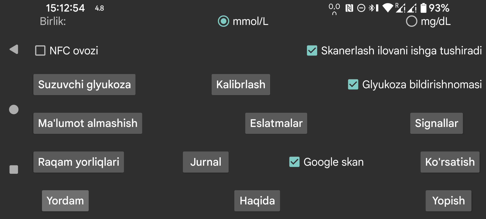

ar be de es fr hi it ja ko nl pl pt ru tr uk uz zh en
Glyukoza qiymatlari mmol/L yoki mg/dL ko‘rinishida berilishini tanlaydi.
Skan vaqtida vibratsiyadan tashqari tovush ham chiqaradi.
Agar bu parametr belgilansa, sensor NFC orqali skan qilinganda Juggluco oldinda ko‘rinmayotgan bo‘lsa ham ishga tushadi. Agar bir nechta ilovada shu parametr yoqilgan bo‘lsa, Android qaysi ilovani ishlatishni tanlash oynasini ko‘rsatadi. Amalda bu tanlov har doim qulay ishlamaydi; shuning uchun ayrim holatlarda oldinda ilova bo‘lmasa skan qilib bo‘lmaydi. Juggluco da bu parametrni o‘chirib qo‘ysangiz, hech bo‘lmaganda bitta boshqa ilova shu yo‘l bilan ishga tushishi mumkin.
Agar root huquqi bo‘lsa, Abbott LibreLink ilovasining NFC orqali ishga tushishini adb shell yoki termux ichida o‘chirib qo‘yish mumkin (Libre 3 bilan ishlamaydi):
pm disable com.freestylelibre.app.nl/com.librelink.app.ui.common.NFCScanActivity
LibreLink 2.7.1 va undan past versiyalarda quyidagi buyruq kerak bo‘lgan:
pm disable com.freestylelibre.app.nl/com.librelink.app.ui.common.ScanSensorActivity
Bu yerda com.freestylelibre.app.nl Niderlandiya versiyasining paket nomi. Uni o‘zingiz ishlatayotgan versiya nomiga almashtirish kerak. Paket nomini root bo‘lmasa ham quyidagicha topish mumkin:
pm list package freestylelibre
Shundan keyin LibreLink oldinda turganda skan qilish uchun ishlatilishi mumkin, lekin u o‘zi avtomatik ishga tushmaydi. LibreLink 2.5.2 va undan yuqori versiyalar root aniqlansa o‘zini yopib qo‘yadi. Magisk ishlatilsa, Magisk nomini o‘zgartirib va kerakli ilovalarni denylist yoki MagiskHide ro‘yxatiga qo‘shib root ni yashirish mumkin. Juggluco ni ham denylist ga qo‘shish kerak. AQSh FreeStyle Libre 2 ishlatilmasa, root tekshiruvisiz eski LibreLink versiyasidan foydalanish ham mumkin.
Root bo‘lmasa, adb shell ichida butun ilovani ham o‘chirib qo‘yish mumkin:
pm disable-user --user 0 com.freestylelibre.app.nl
Abbott mijozlar xizmatiga murojaat qilishdan oldin uni yana yoqish uchun:
pm enable com.freestylelibre.app.nl
(Ilgari Android status panelida glyukoza deb atalgan.) Yoqilgan bo‘lsa, Bluetooth orqali kelayotgan glyukoza qiymatlari sokin bildirishnomada va Android status panelida ko‘rsatiladi. O‘chirib qo‘yilsa, son o‘rniga nuqta ko‘rinadi va bildirishnomada faqat Sensorga ulanish uchun yoki Ma’lumot almashish uchun kabi umumiy matn turadi. Android fon rejimida ishlayotgan ilovadan shunday ko‘rinadigan bildirishnomani talab qiladi; aks holda ilovani osongina to‘xtatib qo‘yishi mumkin.
Juggluco bu bildirishnomani faqat Bluetooth orqali sensor o‘chiq bo‘lganda va mirror ulanishlari bo‘lmaganda o‘chiradi.
Ba’zi telefonlarda glyukoza qiymatini status panelida ko‘rsatish uchun Android bildirishnoma sozlamalarini o‘zgartirish kerak bo‘ladi. Masalan, Realme GT 5G da ilovalar ro‘yxati→Juggluco→manage notifications bo‘limiga kirib, glucoseNotification uchun Set to Silent ni o‘chirib qo‘yish kerak bo‘ladi. Shundan keyin status panelida ko‘rsatish yoqilgan holda ko‘rinadi.
Chap o‘rta menyudagi Bildirish ham Android bildirishnomasini yuboradi. Shu yo‘l bilan ba’zi aqlli soatlarga ham bildirishnoma boradi; bu Garmin bilan ishlaydi. Signallar ham bildirishnoma yaratadi.
Bu parametr yoqilganda qaysi ilova oldinda bo‘lishidan qat’i nazar joriy glyukoza qiymatini ko‘rsatadigan kichik suzuvchi ko‘rinish ekranda doim turadi. Birinchi marta yoqqanda Juggluco ga boshqa ilovalar ustida ko‘rsatish ruxsatini berish kerak bo‘ladi.
Yuqori va past glyukoza signallarini, signal yo‘qolishi signalini va qiymat yana mavjud bo‘lgani haqidagi bildirishnomani sozlaydi.
Miqdorlar uchun ishlatiladigan yorliqlarni belgilaydi. Bu yerda insulin dozalari, uglevod iste’moli va masalan futbol o‘ynashga sarflangan soatlar uchun qaysi yorliqlar ishlatilishini tanlaysiz. Agar Garmin’dagi Kerfstok dan foydalansangiz, shu yorliqlar soat ilovasiga ham yuboriladi.
Juggluco ma’lumotlarini boshqa ilovalar yoki serverlarga yuborishning turli usullari. Soatlarga yuborish uchun esa chap menyu→Watch bo‘limiga o‘tiladi.
Agar ma’lum vaqt ichida ma’lum miqdorda ovqat yoki dori kiritmasangiz signal berilishini belgilaydi.
Sibionics sensor qadoqlaridagi data-matrix ni, Dexcom G7/ONE+ aplikatorlaridagi data-matrix ni va chap o‘rta menyu→Mirror dagi QR kodni Google code scanner bilan skan qiladi. Belgilanmagan bo‘lsa, zXing ishlatiladi. Ko‘p qurilmalarda Google skani yaxshiroq ishlaydi, lekin ba’zan umuman ishlamaydi. Agar xato qaytarsa, zXing ishlatiladi; ba’zida esa Google skani xato qaytarmay turib ham natija bermaydi.
Ma’lumot ekranda qanday ko‘rinishiga oid barcha parametrlar shu yerda jamlangan — maqsad diapazonidan boshlab tilgacha.